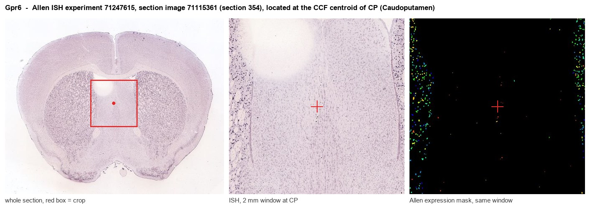
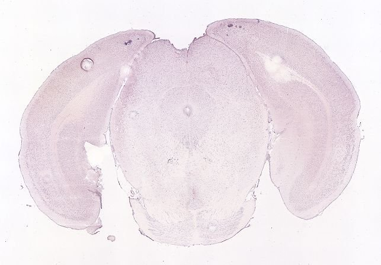
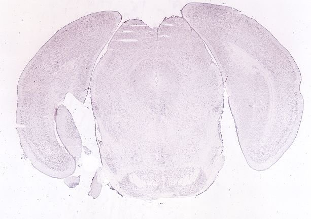
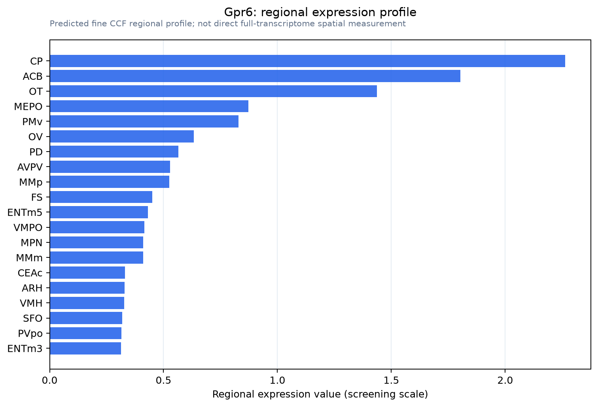

Gpr6
G protein-coupled receptor 6 (Sphingosine 1-phosphate receptor GPR6)
Spatial tier: STRICT_EXCLUSIVE · Class: GPCR · Top region: CP (Caudoputamen) · Positive regions: 9/554
46.3Discovery Score
41.8Targetability Score
CEvidence grade C
What this means: Gpr6: predicted fine-region profile is strict-exclusive, with 9 positive regions out of 554 (limit 12); direct spatial validation is required.
Function in CP: evidence, prediction, innovation
- Gene function
- GPR6 is a class A orphan G protein-coupled receptor related to the cannabinoid/lysophospholipid cluster, historically proposed as a sphingosine-1-phosphate receptor but with no established endogenous ligand. It couples to Gs/Golf and has very high constitutive (ligand-independent) activity, so simply expressing it raises intracellular cAMP and PKA signalling. Inverse agonists lower cAMP tone in the cells that carry it.
- Region function
- The caudoputamen is the input nucleus of the basal ganglia, where cortical and thalamic glutamate converges with nigral dopamine on D1 (direct) and D2 (indirect) medium spiny neurons to select and scale actions, habits and instrumental learning.
- Published in this region
- direct Lobo et al. 2007 (Nat Neurosci) showed Gpr6 is selectively enriched in striatopallidal (D2/Adora2a) MSNs of the striatum; Gpr6-null mice have reduced striatal cAMP and altered instrumental conditioning. Oeckl et al. 2014 (Exp Neurol) found Gpr6 deletion lowers striatal cAMP ~20%, alters dopamine levels, increases open-field locomotion and reduces L-DOPA/apomorphine-induced dyskinesia. Brice et al. 2021 (JPET) developed the selective inverse agonist CVN424, which suppresses indirect-pathway cAMP and reverses motor deficits in PD models; Brice et al. 2024 report a phase 2 trial in Parkinson's disease.
- Predicted function
- Prediction: GPR6 sets the resting cAMP/PKA gain of indirect-pathway MSNs, opposing D2-receptor Gi signalling and thereby biasing action suppression versus action initiation. Loss of function or inverse agonism should mimic D2 agonism, disinhibiting movement, increasing locomotion and relieving parkinsonian bradykinesia without dopaminergic side effects, while constitutive-activity-preserving agonism should slow movement and impair habit expression. Chemogenetic inhibition of Gpr6+ MSNs should phenocopy the knockout's hyperlocomotion.
- Innovation
- ★☆☆☆☆ 1/5 Gpr6 is one of the best-characterised striatopallidal markers and already a clinical-stage Parkinson's target.
- Tools
- Gpr6 knockout mice (Lobo 2007); CVN424 selective GPR6 inverse agonist (clinical stage); indirect-pathway drivers Drd2-Cre (GENSAT ER44) and Adora2a-Cre (GENSAT KG139) for intersectional targeting; Allen mouse ISH datasets 69257600 (sagittal) and 71247615 (coronal).
- References
Direct evidence located at the region

Allen ISH experiment 71247615, section image 71115361 (section 354): the section that contains the CCF centroid of Caudoputamen according to the Allen image-to-atlas alignment (reference_to_image), with a 2 mm window around that point. Left: whole section, red box = window. Middle: ISH signal. Right: Allen's expression-mask view of the same window. open this image in the Allen viewer
Look it up yourself: Allen Mouse Brain ISH for Gpr6Allen reference atlas: CP (structure 672)ABC Atlas MERFISH viewer(in the ABC Atlas choose dataset MERFISH-C57BL6J-638850-CCF, colour cells by gene "Gpr6" or by parcellation_substructure "CP")All genes confined to CP + 3-D brain
Direct spatial evidence
MERFISH REGION LOCATOR

DIRECT ALLEN ISH

DIRECT ALLEN ISH

Regional expression figure

Predicted WMB × fine-CCF profile; not direct full-transcriptome spatial measurement.
Spatial profile
Evidence and specificity
- Evidence status
- PREDICTED_FINE
- Direct sources
- None; predicted localization only
- Exclusive threshold
- 12 positive regions out of 554
- Spatial specificity
- 0.356
- Top-region fraction
- 0.107
- Filter status
- PASS
Interpretation limits
- Cell-type-to-region projection is imputed expression, not direct spatial measurement.
- Adult reference atlases do not establish stability across age, sex, strain, state, or disease.
- Transcript abundance does not guarantee protein abundance or genetic-tool performance.